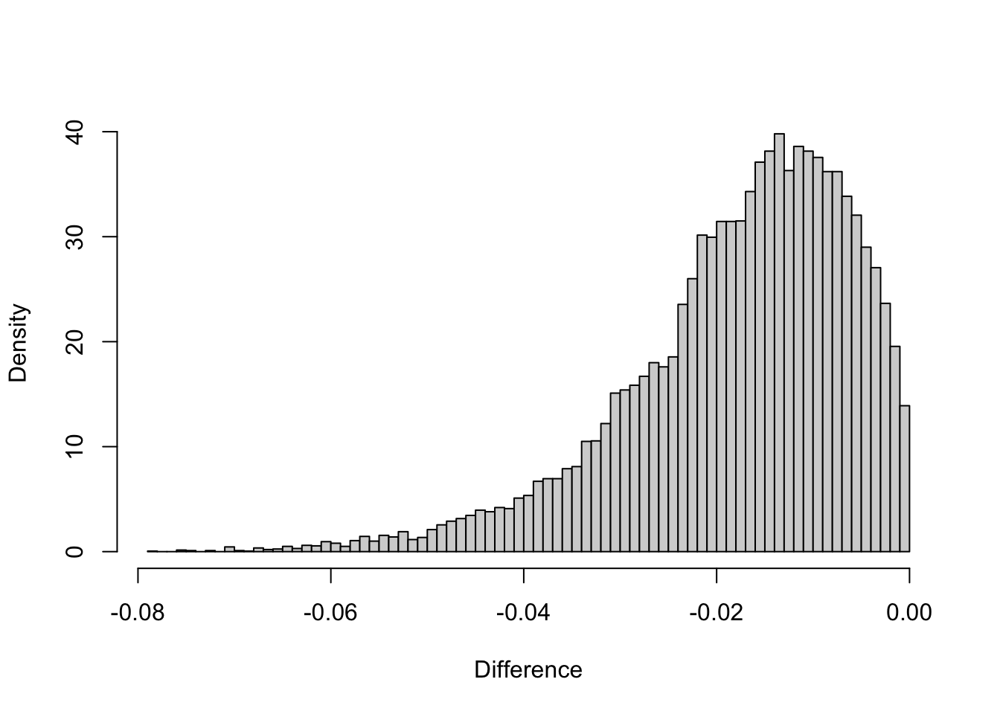

#include <RcppArmadillo.h>
#include <cstdlib>
// [[Rcpp::depends(RcppArmadillo)]]
// [[Rcpp::plugins("cpp11")]]
const double radius = 6371009;
const double pi = 3.141593;
// [[Rcpp::export]]
arma::vec gc_distance_pair_cpp(const arma::mat& coord1,const arma::mat& coord2) {
arma::uword n = coord2.n_rows;
arma::vec x1(n);
arma::vec y1(n);
arma::vec x2(n);
arma::vec y2(n);
x2 = coord2.col(0)*pi/180;
y2 = coord2.col(1)*pi/180;
x1 = coord1.col(0)*pi/180;
y1 = coord1.col(1)*pi/180;
arma::vec num = arma::sqrt(arma::square(arma::cos(y2)%arma::sin(arma::abs(x1-x2))) + arma::square(arma::cos(y1)%sin(y2) - arma::sin(y1)%arma::cos(y2)%arma::cos(arma::abs(x1-x2))));
arma::vec den = arma::sin(y1)%arma::sin(y2) + arma::cos(y1)%arma::cos(y2)%arma::cos(arma::abs(x1-x2));
return radius*arma::atan(num/den);
}
Introduction
Everyone in the R community is probably familiar with the great sf package. It allows you to do pretty much any operations with geometries, and works very well with the tidyverse packages and data.table.
Rcpp and RcppArmadillo
The user friendliness of R can pretty easily be combined with the power and memory efficiency of C++ in order to perform certain tasks with greater speed. Rcpp is a R package that opens for the user the door into C++. And RcppArmadillo is a further extension of the Rcpp package that provides access to the Armadillo library in C++, a very comprehensive set of classes and functions related to linear algebra. You can build matrices, vectors and perform pretty much any task with them through the functions of this library. Let’s see how we can use it to help us calculate distances between points more efficiently. More on the details of using this library with R will probably be shown in another blog post.
Different distance measures
There are 2 conceptually distinctive ways to measure distances in a geographical context. First, when we assume that earth is a sphere, in that case, we use a type of spherical coordinates with a fixed radius \(R_e\), leaving the longitude \(x\), or usually \(\phi\) in spherical coordinates notation and the latitude \(y\), or \(\theta\) as parameters that allow us to locate any point on the surface of earth without ambiguity. The longitude angle takes values \(\phi \in [0,360]\) degrees, while the latitude \(\theta \in [-90, 90]\) degrees. The distance between two points, uniquely identified by their coordinates can be computed by using a generalized formula for the length of an arc on a circle, \[d = \lambda R_e\] And in the case of a sphere,\(\lambda\) is the angle between two radii from the centre of the sphere to each of the points. So how do we compute this angle ? There are actually several ways, they are described in this wikipedia page. Or for a more developed explanation, refer to the geometry books that treat on the subject.
Due to various issues related to rounding errors, the best way to measure the \(\lambda\) angle is through the Vincenty’s formula for an ellipsoid with equal major and minor axis. The formula is the following:
\[ \lambda = atan \frac{\sqrt{(cos(\theta_2)sin(\Delta \phi))^2 + (cos(\theta_1)sin(\theta_2)- cos(\theta_2)sin(\theta_1)cos(\Delta \phi))^2}}{sin(\theta_1)sin(\theta_2)+cos(\theta_1)cos(\theta_2)cos(\Delta \phi)} \] where \(\Delta \phi = |\phi_1-\phi_2|\). We take \(R_e = 6371009\) meters and the distance is thus \(d= \lambda R_e\).
Rewriting numerically in C++
The following code is vectorised so the functions can be written to compute the distance between two sets of points, provided as matrices with the x coordinate in the first column and y in the second. Notice that the angle values are converted to radians using the following relation \(\theta_{rad} = \frac{\theta_{deg}*\pi}{180}\)
Benchmarks
Let’s now look at some comparison of performance:
library(sf)
library(microbenchmark)
centroids <- st_read("https://services1.arcgis.com/ESMARspQHYMw9BZ9/arcgis/rest/services/Workplace_Zones_Dec_2011_PWC_in_England_and_Wales_2022/FeatureServer/0/query?outFields=*&where=1%3D1&f=geojson")Reading layer `OGRGeoJSON' from data source
`https://services1.arcgis.com/ESMARspQHYMw9BZ9/arcgis/rest/services/Workplace_Zones_Dec_2011_PWC_in_England_and_Wales_2022/FeatureServer/0/query?outFields=*&where=1%3D1&f=geojson'
using driver `GeoJSON'
Simple feature collection with 53578 features and 3 fields
Geometry type: POINT
Dimension: XY
Bounding box: xmin: -6.330018 ymin: 49.91475 xmax: 1.759144 ymax: 55.78878
Geodetic CRS: WGS 84# take two random samples of 20000 points
samp1_sf <- sample(centroids$geometry, 20000)
samp2_sf <- sample(centroids$geometry, 20000)
samp1 <- samp1_sf |> st_coordinates()
samp2 <- samp2_sf |> st_coordinates()
cpp_dist <- gc_distance_pair_cpp(samp1,samp2)
sf_dist <- st_distance(samp1_sf,samp2_sf,by_element = TRUE) |> units::set_units(NULL)
benchmark_r_cpp <- microbenchmark(
"cpp_distance" = gc_distance_pair_cpp(samp1,samp2)
,"sf_distance" = st_distance(samp1_sf,samp2_sf,by_element = TRUE)
,times = 10)
benchmark_r_cppUnit: microseconds
expr min lq mean median uq max
cpp_distance 780.23 797.655 878.3512 820.41 882.894 1344.964
sf_distance 66743.94 67034.713 85969.2223 68281.73 107724.671 129492.309
neval
10
10The performance gain is more than 100 times ! And in terms of value difference:
hist(cpp_dist-sf_dist, breaks = 100
,xlab = "Difference"
,freq = FALSE
,main = "")
These differences come from rounding errors and the fact that sf uses a radius value for earth which is 1 m more than this code.
Conclusion
Consider rewriting certain functions for your own specific needs and with the appropriate tools in order to significantly gain in performance of your code. It is important to stay cautious and test for robustness whatever you do, this will make your implementations stand out and be actually useful. A package like sf is a brilliant piece of software in part due to the quality control it does on the data before processing it, but the downside of that is a loss in speed and performance. So if your code is organised properly and you can be sure that the data that enters your environment is in due form, you can increase your performances.